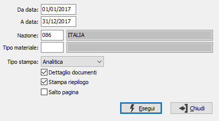

Prospetto dichiarazione periodica
Il programma effettua un'analisi, partendo dai documenti di vendita presenti nel periodo richiesto a video, producendo un prospetto riepilogativo dei contributi da versare; è possibile specificare un solo tipo di materiale o tutti, ottenere un prospetto analitico comprensivo dei singoli materiali, suddivisi per tipo o sintetico dei soli tipi materiali. E' possibile far stampare anche il dettaglio dei documenti che danno origine alle singole voci, far stampare un riepilogo dei totali per tipo materiale ed effettuare una stampa continua o di un solo tipo materiale per pagina.
